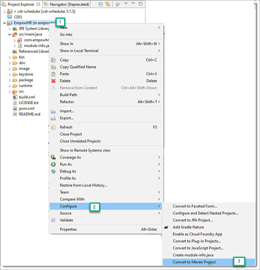
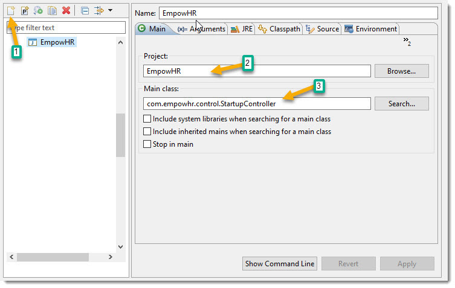
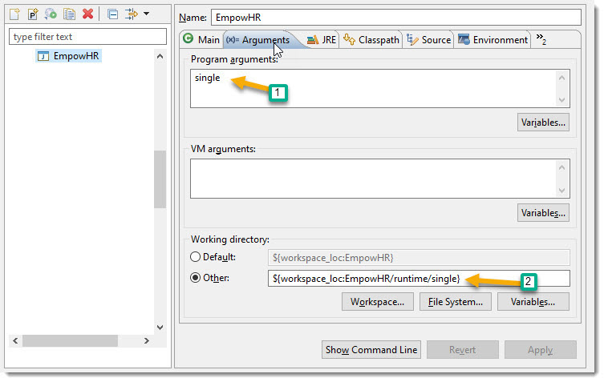
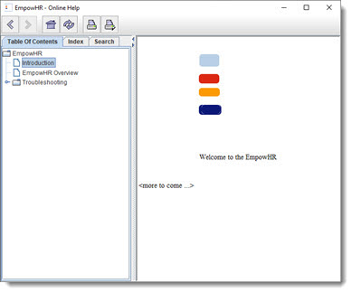
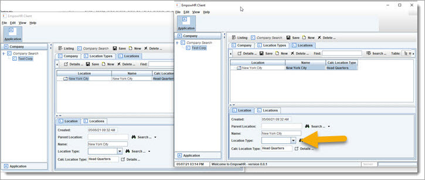
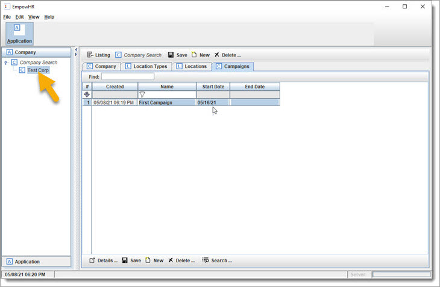
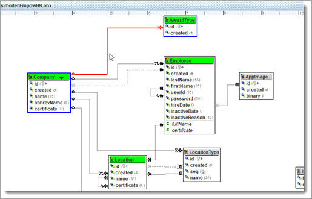
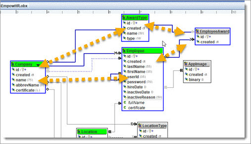
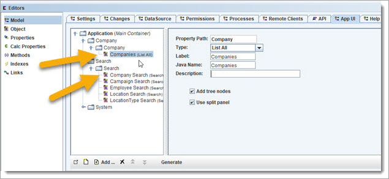
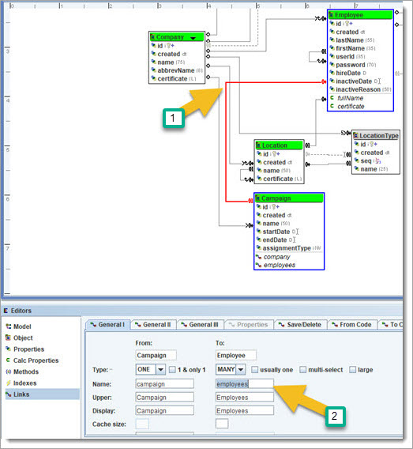

Sample Application
For our demo, we are going to design and create a “proof of concept” (POC) software system for a fictitious company named "EmpowHR" (meaning "empower Employee HR").
Here is a list of icons that we will use:
Whiteboard: capture ideas.
 BizRule: mark
business requirements (rules) for the application that we are building.
BizRule: mark
business requirements (rules) for the application that we are building.
 Review: used to recap what we just
did before moving forward.
Review: used to recap what we just
did before moving forward.
 CheckPoint:
allow you to get caught up with the latest Model changes and sample data from a
github project.
CheckPoint:
allow you to get caught up with the latest Model changes and sample data from a
github project.
 ReGen &
Run: use OABuilder code generator to regenerate the
application, and then run.
ReGen &
Run: use OABuilder code generator to regenerate the
application, and then run.
 Discuss & Learn: take time to
explain some important concepts and technical details about how the system
works.
Discuss & Learn: take time to
explain some important concepts and technical details about how the system
works.
 Continue working on the Model: after a
discussion.
Continue working on the Model: after a
discussion.
 To do item.
To do item.
 to do item: Show the screen shots of
final App here.
to do item: Show the screen shots of
final App here.
Along the way, we will give extra details on how to use OABuilder, generate the code, and run the application.
This POC will allow the employees of our customers to earn points. The points are then used to purchase items from a list of choices specific to the type of award and the company offering the reward.
The customers are companies that have hired EmpowHR to manage their employee award campaigns.
The name of our platform will be "empowhr", and will need to be highly configurable, so that the customers are able to create a dynamic experience and tune it to match their company preferences.
Our goal is to be able to build a single platform, that can run as a distributed platform. This means that we want our software to be able to scale and run hundreds of company campaigns, with over a million users, and expect an average of 500 users at a time, with spikes over 5k users.
For our Proof of Concepts, we will deliver:
- Object Model
- Class diagram for model.
- Database Scheme
- a working application with Desktop UI
- REST API
- Web Server
- Security
- Options to run as Server/Web
Server/Clients/Single/CLI/Webservice/etc
- Various UI applications, based on type of user.
The production platform would look something like this. Locally, we will be able run as a single user instance, or as distributed as we want - clients/server, microservices, etc.

Create using OABuilder
The code generator that we are using in OABuilder has a starter Model that we can use, "OATemplate". It has model classes for User and UI settings that we can use as our starting point.
Qqqqqqqqqq show opening new model “OATemple” … make sure that it’s in correct directory, and that it gets updated when changed
We will open it and make a copy using menu option "File/Save Model As
...", naming it “EmpowHR”.

Next, use the Model Editor to configure this new project.
Next create the directory name that was entered for "Code Gen Root
Dir" above.
The project is now ready to be generated. This will allow us to run and see
the application as we move through the demo. Click on menu item
"Generators/Generate All" and select Ok. This will generate the
project in the directory that you entered above.

Compiling and
Running EmpowHR
Create a new project in your Java IDE. Here, I am using Eclipse:

Make sure to change Location to the directory that you entered for the Models
code generator directory above.
Your project will look like this in the Eclipse project explorer.

Set up the project to use Maven for building. Do this by right clicking on
the project name, as follows ...

We are now ready to run. We have the option to run as single user, and as
multi-user (client, client UI, server, webserver, and more).
The runtime directory in the project has subdirectories for each runtype to use as the "working directory".
Running as a single user, do the following from Eclipse to set up to run as
Single User mode:
From Eclipse main menu, choose "Run/Run Configurations" and choose
option to create a new launch configuration
Enter the following:


This is now ready to run.
Running the new App looks like this.

Click on toolbar button “Application”.

Click on menu item “Help”.

This is starting point, that will expand as we add and change the model.
Quick note: this same application can be ran as multiuser and split into
multiple services at any time. For now, we will use the single user runtime
option.
The runtime directory looks like this.

Runtime directory:
The file single.ini is used for runtime config settings for single user runtime
mode. It has default settings for saving the data to file, and loads it into an
in-memory database at start up. We will switch over to a database later. For
now, the in-memory DB does everything you need for queries and saving. The
default config settings can be found in the source code, located in directory
com/empowhr/resource, see files values.properties
and Resource.java for full listing and more info.
 Continue: now that we have it running, we
will go back to the model.
Continue: now that we have it running, we
will go back to the model.
Let us add the main Objects, starting with Company. Click on the workspace
toolbar "create new Object" (far left). This will create an empty
object in the workspace.

Change the Object name to "Company", and the other fields will automatically be updated to match.
Use the Object Editor to make the following change:

That is all we need for now, let us add some properties. The properties for
"id" and "created" are already added by default. Note: the Id property is an auto assigned sequence number, and is
the unique identifier - a good idea to use for most/all objects.
To create properties, let us start off with "name". Click on the
Properties editor and click on the new button.

and add abbrevName

Change the UI column title to "Abbrev".
Ok, now we have a Company Object, with properties. Let us update a couple of
other things in the "User Interface" tab.
Select name as the "Display Property".

While in the UI tab, go ahead and add the table columns for Company, and the Search properties.
Table columns.
Search properties.
The Company Object is now created with a few properties. We can now add to
the Application’s Main UI and test it.
Adding to the Application UI is done by going to the Model Editor and choosing
App UI tab.
Add a new node for "Company" by clicking the new button and using
mouse to drag into position in the tree. Change the name to
"Company".
Click on the "Add ..." button and select Company from the popup.
Note: always save your model changes. By default, all previous versions of
the model will be stored in a backup subdirectory under the directory where you
are saving your Model.
example: ./backup/202105011310_EmpowHR.obx
 ReGen & Run:
ReGen & Run:
Click on menu item "Generators/Generate All" and regenerate the
application, and rerun the Eclipse config for EmpowHr.
This shows the Company search window.

This shows the Company editor.
<![endif]>
 Review: we created the first Object for
Company and can create new, search, and edit/update/delete.
Review: we created the first Object for
Company and can create new, search, and edit/update/delete.
Take a moment to look at Code. The code generation uses a combination of techniques:
1. template project, filling in using a small tag language. OABuilder defaults to using the OATemplate project.
2. code generation, directly create files (source, resource, config, etc).
3. Base classes that have subclass that can be used to overwrite methods.
4. Report generation that uses html/xml engine to run as templates
The code generation supports adding “callbacks’ the generated model objects, propertys, links, etc.
The project is generated using Model/View/Control structure, and directories
that match.
The Controller packages are responsible for managing specific functionality.

The Model package has the data/entity objects ("./model/oa/*.java"), and the "./model/*Model.java"
classes are used to configure the object relationships and rules.

The View packages have the User Interface classes, each named after the
Model Objects.

The Resource package has runtime parameters and default values.

For now, that is a good start for reviewing the source code - we will look more later.
Now, create the following three new Objects:
click the new Object button on the workspace toolbar, set the Object name, drag
object to match screen shot.
then select all three (mouse drag to rubber band around them), and select a
color green for them. 
Next, create the relationships between these Objects, starting with LocationType –
 BizRule:
"A Company has many of its own Location Types", which is
used to describe the names of a company's types of locations. "own"
means that the Location Types belong to a single Company, and not shared with
other Company ... each Company has its own Location Types. For example: Region,
Territory, City, ...
BizRule:
"A Company has many of its own Location Types", which is
used to describe the names of a company's types of locations. "own"
means that the Location Types belong to a single Company, and not shared with
other Company ... each Company has its own Location Types. For example: Region,
Territory, City, ...
Let us change the relationship to "owned", which means that it is
only for the Company that created it, and they are treated as an aggregate (one
unit).

We need one more thing for this, to be able to keep the sort order. To do
this, we create a property that is a number, so create a new Property, name it
"seq", set type as "int"

... and then set the "seq" flag.
This will tell it to use this property to keep the sort order, so that it can
make sure to load it in the same order.
Now, let us use the "seq" property for the link ...

The Company.LocationTypes will now be auto sequenced
in the order that users position them.
You will notice that the link shows a "S" icon.
Note: "Company.LocationTypes" is a property path, an important concept for object graphs.
Next, add a couple of things to LocationType, and
then we will  regenerate and run again.
regenerate and run again.
Add a new "name" property. Notice that for the "Lengths",
25 is max input size. The display size is the default size of textfield, and max display is to allow the textfield to grow to a length (usually the max). The grid
length is for the column in a table/grid listing.
Now, let us go to the Object UI, and set the display property to
"name" (under "UI General" left sub tab). Under "Table
Columns" subtab, add name. For "Search Panel", add
"name".
Go ahead and  regen and run again.
regen and run again.

We now have Company.LocationTypes defined. This will
be used in the next step, when we set up Company Locations, and how each
Location will "know" the Location Type.
Create Company Locations
First step is to create an owned link between Company and Location - " A
Company has many Locations"

We are now going to set up Locations so that it can be multi-level. This is
done by creating a link to itself and flagging it as recursive.

Let us add the following to Location:
create a property "name"
change Location UI to use "name" as display property ("UI
General" left subtab), and add name to table ("Table Columns"
left subtab) and search ("Search Panel" left subtab).
 ReGen & Run
ReGen & Run

Next, we want to know a Location's LocationType,
based on its level in the location hierarchy. There are two options, the first
would be to allow the selection from the Location's Company list of LocationTypes (Company.LocationTypes).
The second is to have it automatically pick LocationType
based on Company.LocationTypes list to match the
position of the Location under Company (since Location is recursive/hierarchy).
We will choose both, so that a Location.LocationType
can be directly selected, else it will default to the Company.LocationTypes
with same position.
<![endif]>
To do this, we will first create a Location.LocationType
link. Right click the Location object and click new link, or click the link
button on the workspace toolbar.
Now we need to make a couple changes to the new Location.LocationType.
First make sure the relationship is One LocationType,
Many Locations, and that the names are "Locations" and "LocationType".
Next, we need to have choices for LocationType use
the LocationTypes from Company.LocationTypes.
This is done be going to the "General III" tab and setting the value
for "Select LocationType from:" to Company.locationTypes.
Do a codegen and rerun the App

One last thing: click on the link Company.locations, go to the "General II" tab, and set "Is Locations Recursive" to checked.
 ReGen & Run:
then add some data.
ReGen & Run:
then add some data.
If you click on sidebar "Company Search", and then click the
"new" button.

Set the name of this new Company to "TestCorp",
abbrev name "TC".
Click on the "Location Types" tab, and use the "New" button
to create and match the following list:

Close the Application, and rerun again. Click the toolbar
"Application" button, then click the sidebar "Company",
notice that no Companies are showing. Click the "Company Search"
button, and then click the "Run Search" button to get a list of all
the Companies. Your new Company will be on the list, and under the Company side
bar.
Note: the data is stored in the "runtime/single/data directory", in
multiple formats. They are also saved backup copies with files names that
match.
To edit a Company, either click the Company showing in the sidebar
"Test Corp", or you can click it in the search listing, and then pop
it up by clicking the "Details ..." button in the bottom toolbar.
The first shows it inside the main window, the second will show it in a popup
window.
Now, let us add a Location. Go to the following and add a new Location.
Notice that the Location list will be recursive and displayed in a tree table.
Next, we want to allow the Location that has not been assigned a LocationType to default to the specific value in the Company.LocationTypes.
We will do this by creating a "Calculated Link" between Location.LocationType and call it "Location.calcLocationType".
Right click on Location and choose the following:
Let us set up the Link.

Now, we need to set up the calculation. The first thing is to go to the
"Properties" tab, and click "Add ..." to add property paths:
"Company.locationTypes", "Company.locations", and "locationType".
These are the property paths that are used to determine the correct Location.locationType, and needs to be recalculated if any
of the values change.
Go to the "From Code", and add the code that will be used for the
calculation. Click the "Generate Code" to have a template created to
enter code.

Enter code, that shows that it first checks to see if a LocationType
is assigned, else it will determine based on the Company.LocationTypes.

 Review: We now have Company.Locations,
that can be a hierarchy. The Company has a list of LocationTypes,
that can be directly assigned to a Location, or use the correct value from Company.LocationTypes.
Review: We now have Company.Locations,
that can be a hierarchy. The Company has a list of LocationTypes,
that can be directly assigned to a Location, or use the correct value from Company.LocationTypes.
Let us add the Location.caclLocationType to the
Location table columns.

 ReGen & Run
ReGen & Run

The Location.calcLocationType will either be the
assigned LocationType, or if empty (null) it will be
the same as the Company.LocationTypes(pos), where pos
is the position of this Location in the Company.Location
hierarchy.
Running as
Multiuser, and with webserver.
We have been running as "single" user, and now we will run a "server", and multiple "clients" - to show it working as a distributed application.
Run as Server - first, copy the files "ObjectCache.bin"
and "data.bin" from "runtime/single/data"
to "runtime/server/data".
To run from Eclipse, choose menu "Run/ Run Configurations ..." and
click on "EmpowHR", change name to "EmpowHR single". Then click the duplicate button
(upper left toolbar) to create a duplicate, and name it "EmpowHR server". Go to the "Arguments" tab,
and change single to server in both places.

Run this, and you will see the server UI.

Follow the same steps to create an Eclipse runtime for "client",
and then run.


Login using "admin"/"admin" for user/password.
Run two clients, and go to the company location that was created.

Now, change the location type and notice how the other UI is automatically
updated.
 Discuss & Learn: The change
causes a "reaction", causing the calcLocationType
to be redisplayed on both programs. This behavior is described as an
"observable & reactive object model", and is an important feature
of the OA libraries. This allows any of the model objects to be distributed and
synchronized across servers - realtime or eventually.
Discuss & Learn: The change
causes a "reaction", causing the calcLocationType
to be redisplayed on both programs. This behavior is described as an
"observable & reactive object model", and is an important feature
of the OA libraries. This allows any of the model objects to be distributed and
synchronized across servers - realtime or eventually.
 Discuss & Learn: Back to
discussing databases ... the model objects are set up to work with any datasource, all types and combinations. Currently, our demo
application is using an in-memory datasource that
supports sql/OQL and is persisted to xml, json, java
binary. The client apps are using a client datasource,
which remotely interacts with the server's datasource.
Caching is included, and "hinting" is used when fetching data to make
it more efficient when making a trip to another server or disk. For example,
getting a Company is smart enough to know about other information that
will be needed close to the Company (reference data, other Companies, etc), and sends this with the request as "hints".
The hints are based on the object graph and how it is "wired"
(used/configured) in the part of the application that is requesting data.
Discuss & Learn: Back to
discussing databases ... the model objects are set up to work with any datasource, all types and combinations. Currently, our demo
application is using an in-memory datasource that
supports sql/OQL and is persisted to xml, json, java
binary. The client apps are using a client datasource,
which remotely interacts with the server's datasource.
Caching is included, and "hinting" is used when fetching data to make
it more efficient when making a trip to another server or disk. For example,
getting a Company is smart enough to know about other information that
will be needed close to the Company (reference data, other Companies, etc), and sends this with the request as "hints".
The hints are based on the object graph and how it is "wired"
(used/configured) in the part of the application that is requesting data.
For example: a Company is using
its LocationTypes to set the Company's Locations.locationTypes.
If the Company X is not in memory (cache), then it will be requested from datasource. If it is running on a client, then the datasource knows the server(s) to get Company from. The
computer could be using a database directly. Either way, it "looks"
at how the Company will be used and is able to "hint" to "also
send the Company.locationTypes, Company.locations,
etc." if it has time. Otherwise, there is a good chance it might be
calling for it soon, so go ahead and have it ready. This allows it to be
dynamic and smart about how and what is being delivered and acts as a JIT (just
in time) access for your model objects. The "goal" is to act like the
objects are in the local cache.
Another example: selecting all Orders for an Employee, to display them and allow editing. The application code around this looks at how the model objects are "wired"/connected and will see that the OrderItems, and other reference data could be needed (based on user navigation). When the method is called for order.getOrderItems(), it will look at other unloaded reference on "order", and along with the other Orders close to this Order from the collection of Order objects from the query.
Web Server
While we have the server running, let us use the browser to see some
features of the webserver.
The server uses embedded Jetty for a zero admin webserver. It is configured as
a high end webserver with built-in services, including Java Server Pages, web
services (SOAP), remoting through http, REST API, Swagger/OpenAPI,
security, and many more features.
REST API for Model
There is full REST API included for the Model. For example, use your browser
to go to "http://127.0.0.1:8080/servlet/oarest/companies"
to see the list of Companies.
Use admin/admin for access.

We will spend more time on the REST API later, and the other web server
features. It is a secure access to your full Model.
OpenAPI using Swagger
The Swagger interface shows all the Model REST API calls, and is included in
the generated Application.
This needs to be generated by choosing menu "Generators / Open API"
and selecting directory "swagger-ui". This
creates the file OpenAPI.json.
After generating, use this link to display in browser:
"http://127.0.0.1:8080/swagger-ui/index.html".

Using CheckPoints for catching up with Model and sample data for
Demo Application.
 CheckPoints:
throughout this demo, there will be checkpoints with a number. This can be used
to get a copy of the Model (EmpowHR.obx), and the
data files “data.bin” and “ObjectCache.bin”.
CheckPoints:
throughout this demo, there will be checkpoints with a number. This can be used
to get a copy of the Model (EmpowHR.obx), and the
data files “data.bin” and “ObjectCache.bin”.
Go to the EmpowHR project at https://github.com/ViaOA/empowhr, and go to the checkpoints directory.
Do the following if you would like to use them at that point. Substitute # with the check point subdirectory that is needed.
- Replace your model with EmpowHR.obx
- Copy ObjectCache.bin to
runtime/server/data and runtime/single/data
- Copy data.bin to
runtime/server/data and runtime/single/data
Note: some of the CheckPoints will only have a Model. You can use the previous checkpoint's data files.
 CheckPoint
#1 was created, before starting this next section.
CheckPoint
#1 was created, before starting this next section.
use the instructions above to use the checkpoint files.
 Continue working on the
Model:
Continue working on the
Model:
Ok, close the Server and Client Apps, and we will go back to running as single user, and continue building our Model.
The last model change was the calculated Location.LocationType link. We are done with that and can now create the "Company owns many Campaigns" Link.
First, let us add the following Properties to Campaign: name, startDate, endDate.
Make the following change for Campaign:
Go to the “User Interface” tab, “UI General” left
tab, and set Display Property: "name"
Then go to the “Edit Panel” side tab, to match the following:

Also, make sure to check the "include" column for "Id".
For UI table columns, match the following:

And select all properties for searching:

Now create a link from Company to Campaign (1toM) and make it an owned link.
... and go back to Campaign table columns and add Company.
 ReGen
& Run: do a codegen and rerun the App as single
user.
ReGen
& Run: do a codegen and rerun the App as single
user.
Perform a Company search, select your "Test Corp" Company, then then
create a new Campaign.
Now we will add a validation to campaign.endDate. It can’t be before startDate.
There's a couple of options:
1. have it checked when the setEndDate is called.
2. add validation to a callback (discussed next) that a program can interact with.
Option #1, validate during call to setEndDate.
Select endDate in the property editor. Go to
"code" tab, "get/set" subtab, click the "generate
code", and then add the custom validation.

This works and keeps invalid date values, but it would be "nice" to
know ahead of time if a new value is valid or not.
Let us set that up using a Callback: Select the callback subtab, check the
"VerifyPropertyChange", then click
"generate code", then add the custom code.

<![if !supportLineBreakNewLine]>
<![endif]>
Do a codegen and rerun the App as single user. Try
to change the Campaign.endDate to be before the startDate.
Let us go ahead and use Callback for another user interaction. If the Campaign.startDate is changed, and its previous value is
less then today, then we should have the user confirm the change.

 Discuss &
Learn: “Callbacks”. Used to allow outside code to interact with
custom code in Model Objects. This is an important ingredient in the code
generation techniques used in OA, to be able to build close to 100% of an
Application. There are always special cases that fall outside of what can be
done in a modeling and code generators, and callbacks are great for solving
this.
Discuss &
Learn: “Callbacks”. Used to allow outside code to interact with
custom code in Model Objects. This is an important ingredient in the code
generation techniques used in OA, to be able to build close to 100% of an
Application. There are always special cases that fall outside of what can be
done in a modeling and code generators, and callbacks are great for solving
this.
Set the "sort order" for Company.Campaigns
to be by startDate.

We could have (might do it later) used a seq property for the sort order.
Changes to the
Model
 Discuss &
Learn: OABuilder keeps track of the changes. Go to
the Model Editor, "Changes" tab.
Discuss &
Learn: OABuilder keeps track of the changes. Go to
the Model Editor, "Changes" tab.

These are the changes made so far, and are used by code generation to do things
like creating a database change script (DDL & SQL).
 Review: We have added Company.Campaigns.
Review: We have added Company.Campaigns.
Next, let us go in fast forward and layout a few groups of the Objects needed:
Employees, Awards, and Items. Then we will connect them together and start
filling in details.
Here is the story - our customers are Companies, that have Locations, that have
Employees. These Employees receive Awards, that can be redeemed for Items. The
Items are in a Catalog, that is organized into Sections. Each Award has an AwardType, that is associated with the Catalog that can be
used to choose an Item from. Each Item can have options (ex: color, size, etc).
 CheckPoint: you can use the saved Model from
"checkpoints/2/EmpowHR.obx", that includes
these new Objects.
CheckPoint: you can use the saved Model from
"checkpoints/2/EmpowHR.obx", that includes
these new Objects.

This is the design "mode" that you can be in when talking through the business requirements and building a model for it. The next "block" of changes will be for the shopping cart and creating and managing employee Orders. For now, we will zoom in and get this last block defined and tested.
Let us color code first. Set the main Objects to green, to have them stand
out, and have the other Objects unflag so that they are gray.

Starting with Employee, we’ll add the
following properties.

The password will use a one-way encryption and needs to allow for some
"bloat", so the size is set to 70.
Create a link for "Location.employees" (one2many). This is not an owned link, since an Employee can be moved to another Location. We do want to make sure that Employees and the Location must be in the same Company. Otherwise, an Employee could be added to a Location in a different Company. To define this, go to the Link tab "General III" and set the equal property value for Location and Employee to be the common Company.
Location.Company & Employee.Location.Company. This tells the Model that they both must match Company for it to be valid.

Let us create a Calculated property for Employee "fullName".
Select Employee in workspace, select the Calc Property Editor, and click the
new button.

Set up the dependent properties as shown.

Add the following for the code.

Set up Employee UI, change display to "fullName",
and set up "Table Columns" for first, last names, and have search
match this:

For the search, set userId, location and company to
have "null option" checked.
This will allow searches to include a null value search option.
 ReGen
& Run: do a codegen and rerun the App as
single user.
ReGen
& Run: do a codegen and rerun the App as
single user.
There is a compiler error with the calculated property Employee.fullName.
Change the code to this and regen.

Do a  codegen
and rerun the App as single user.
codegen
and rerun the App as single user.
Ok, now we have Location.employees, but we need to
add a few "user friendly" items. First, there is no way to find an
Employee without "drilling" down from Company and Locations.
We will create an Employee Search from Company. Right click the Company Object
in the workspace, and choose "Create new Search Link ...",
A search link is used to add a search from one object to another, by using the property path (locations.employees) that connects them. The search logic will know to search for Employees using this path by using a Filter.

 ReGen
& Run: and bring up your
Company (using Company Search), and then use the "Search Employees"
tab to find John Doe.
ReGen
& Run: and bring up your
Company (using Company Search), and then use the "Search Employees"
tab to find John Doe.
There are a few things to notice in the UI, and how it directly works as Modelled.
From the search for John Doe, from the Company, you can popup Employee using
the "Details ..." button. This shows the Company.Employees relationship.

From there you can click on the Location "Details ..." button, and then see John Doe in the "Employees" tab.
The UI navigation follows the Model's Objects & Links. The Application is
treating this as an Object Graph, which means the Objects are not just a copy
of data from a record in database, but kept in sync and distributed across
systems.
Changing "John Doe" to "John Dox" from the Location's
Employee table shows how the "other" John Doe is also changed. This
is because the program and Object Graph are smart enough to be using
the same instance. Any other part of the Application (and other servers) that
have Employee John Doe (id=1) will use the same object and not create a
duplicate.

The Company Employee Search is helpful, but an Admin would want to search all Employees. Let us create a full system Employee search, and update the UI with a new title bar button for searching. We do this from the Model / App UI tab. We are first going to change the UI hierarchy so that it will have another layer/level.
The UI generator looks at the "depth" of the UI tree to determine how to build the navigation layout. The top level is for main toolbar, next level is side bars, and additional levels will allow expanding the side levels.
Click on the new button (bottom left) to create a new node and then drag-n-drop it to under the Application (root node). Name this node "Company" and then drag the other "Company" node under it.
Create another new node, and name it
"System" and drag/move it to Application. Click on the new node and
name it "System" for now. Drag node
"Application" and drop on "System" node.
 ReGen
& Run: make sure it is still working :)
ReGen
& Run: make sure it is still working :)

 CheckPoint
#3 was created. See instructions above on where to copy and rename the
files.
CheckPoint
#3 was created. See instructions above on where to copy and rename the
files.
From the “Model Editor”, “App UI” tab, create a main toolbar Search button.
Create a new node, naming it "Search", and place it under
Application.

Add a Search node and make it a child under Search.
Now, use the add button (bottom, see arrow) to add all the following:

It will look like the following:
We might not want to leave Company as "List All", but it is good for
now.
Security
OABuilder lets you define coarse and fine grain
access and security. Let’s go back to the Model
UI and add a security setting to the "System" button, so that only
Admin users can use it. The property
Admin in User is used for this.

We will show this being used when we switch back to multiuser mode later.
Set up another company "ABC Company", with one location type, and
then add one location.

If you go to the "Search Employees" tab and do a search, there will
not be any results. Select the "Test Company" and redo the search to
see "John Doe".
Go ahead and create an employee for "ABC Company" main location with name "Mary Smith".
Let us make a few changes to Employees before moving on. Add new properties
for hireDate, inactiveDate,
inactiveReason.

Make inactiveReason visible only when there is an inactiveDate.

Make the Employee recursive by recreating a self-reference/link, so we can
know the management structure. Use the link button to do this, then go to
"General II" tab and set "Is Employees recursive?" to yes.

We also need to make sure that Employees belong to the same Company.
Also, make the Link Location.Employees recursive.
 ReGen
& Run: make sure we can get
"John Doe" some help from a new Employee.
ReGen
& Run: make sure we can get
"John Doe" some help from a new Employee.
Ok, the Location.employees being recursive is not going to work for us. For example an Employee that works for a manager under a different location. Instead, we need to have Company.employees as a recursive/hierarchy, and Locations.employees as the Employees that work from that Location.
We will undo a couple of things and move forward from there.
Go back to the Location.employees link and set "Is Employees recursive" to no.
Go back to the Employee.employees link and change the name from "parentEmployee" to "managerEmployee".
Create a One2Many link for Company.Employees. Set "Does Company owns Employees" to true. "Is Employees recursive" should be yes.
Also, go back to "General I" tab and set the "Cache
Size:" for Employees to 100. This sets the amount of Company.employees collections (Hub) that will use cached. More on this later.
Delete the Link for Company.searchEmployee - and we
will next recreate it using "Company.Employees"
as the property path. Right click Company, "Create new Search Link
..." and select "Company.employees".
Make the following change to the Location.employees link: click "General III" tab, and set "Select Location from" to "company.locations".
 Review:
we just did some rewiring, so that we have "a Company owns a
hierarchy of Employees", and Employees "have a Location".
Review:
we just did some rewiring, so that we have "a Company owns a
hierarchy of Employees", and Employees "have a Location".
 CheckPoint
#4 created here. Use the
instructions above to use the checkpoint files.
CheckPoint
#4 created here. Use the
instructions above to use the checkpoint files.
Here is what Company is looking like now.

Couple of notes: the demo application is being generated straight from the model. The code generators have all the information to do this, including the custom code that we added.
The recursive "Company.employees have
employees" has multiple ways for viewing the list. The tree view is used for Hierarchy List,
and the Flattened list shows all Employees in the hierarchy as a single list.
Before moving on, let us look at the model.

This shows how the Locations and Employees are set up so that they are under
the same Company.
 BizRule:
we want a list of Employees
that do not have a HireDate assigned.
BizRule:
we want a list of Employees
that do not have a HireDate assigned.
This can be done using a simple query to get the list. But if we want to have a list that
is kept real time updated, then we can create a Filter that will do this. Click on the Employee Object, select the
"Filter" tab, click "New" button, and make the following
Filter.
Go to the "Dependent Properties" and add "HireDate".
Go to the Code tab, and add the following for the Query. This is the query it
will use to initially load from datasource.

Now add the Java code.
... also fix a typo, change "HireDate ==
null" to "hireDate == null".
 Regen and rerun:
Regen and rerun:
Now give "John Doe" a hireDate. Change
the Table to "flattened", and choose "No Hire" from filter
dropdown.

That's a simple Filter, but it gives you the idea of how it works. A filter can
be created on anything, and it will be dynamically updated.
Test Client and Command Line Interface (CLI)
Next let us look at how to create a "Test Client", which is a client application that can connect and interact with the Server.
We want to run the Server and have another program connect to it and select Employee John Doe.
From Eclipse, go to "run configurations" and make a duplicate of
your "EmpowHR client", then make the
following changes.
If you run it now, it will try to connect to a server and fail, since the
server is not running. Run the server, but first copy ObjectCache.bin
& data.bin from runtime/client/data to
runtime/server/data. Then run the Server, then run your testclient.
The testclient connected to the Server and then
exited. Now, pull up file TestClientController.java, and make the following
change:

Rerun and you will see console output showing the John Doe Employee object, and
then it will disconnect after 2 seconds.
 BizRule:
we want to be able to create
a "New Hire Certificate", welcoming new Employees to the Company.
BizRule:
we want to be able to create
a "New Hire Certificate", welcoming new Employees to the Company.
We want to be able to have a template created for the Company or Location
and allow it to be used for an Employee.
Click on the Company Object and create a new property.

A “String (Long)” is an unlimited length string.
Click on the flags tab, and check "Html Template". This will allow a styled html editor to
be used to define a html template, with tags to insert dynamic data.

 Regen and rerun as Single
User.
Regen and rerun as Single
User.

We will go over all the things that you can do with the editor in another
tutorial. For now, it is worth noting that you can have a background image,
which would make the certificate look great. Other data tags can be used to
dynamically generate a report or pdf. Right click inside the editor to
see all of the options.
What we want to do next is to allow Locations to have their own employee
certificate, that would be used for instead of the (default) one that is in the
Company.
Create the same project "certificate" in Location as you did for
Company. Use copy and paste to save time. From the left side, right click on
the Company.certificate property and choose copy.
Then right click on Location and choose paste.
 Regen and rerun as Single
User, and see how the Location now has a Certificate tab.
Regen and rerun as Single
User, and see how the Location now has a Certificate tab.
Now we want to be able "know" what certificate to use for an
Employee. Both the Company and Location have a certificate property. We want to have the Employee.location
checked first, and if empty then keep checking the parent Locations since it
recursive, before using the Company.certificate.
To handle this, we will create a calculated property in Employee for
"certificate" and use a finder to get the value. Click on the
Employee Object and create a new Calculated Property named
"certificate".
Go to the "Dependent Property" tab and add property paths: "location.certificate", and "company.certificate".
For the "Code" tab, enter the following:

 Regen and rerun as Single
User, and see how the Employee Certificate tab matches the first value found in
Location or Company.
Regen and rerun as Single
User, and see how the Employee Certificate tab matches the first value found in
Location or Company.
Note: setting a Location hierarchy would also follow the Location recursive hierarchy itself.
Next, let us add an Image Object to the Model. We will use it as a multi purpose place to store images. Initially, we
use it for Employee photo and signatures.
Create a new Model Object and name it
"Image". Click the checkbox for "multi-purpose".

Create the following property (type BLOB) to store the image.

Go to the "Flags" tab and check "Image".
Now create a link between Employee and Image, set type to OneToOne.
 Regen and rerun.
Regen and rerun.

Image editor.
The name of our last Object "Image" caused some problems, since there are other classes with the same name. We can fix that by changing the Object to "AppImage", and everything else will adjust (rename). We will also need to delete the files that were generated for the "Image" Object, since OABuilder does not delete files.
From Eclipse, you can do a "Search / File ...", and select
Image*.* to get a list.

Then use the following to delete all of them.

 CheckPoint
#5. If needed, get the model and the data files.
CheckPoint
#5. If needed, get the model and the data files.
 Regen and rerun.
Regen and rerun.
Generate DB script
The Model is database independent, which means that we can switch databases easily. So far, we have been using the OADataSourceObjectCache, which loads data into cache and allows queries and CRUD operations. It is great for starting out, entering test data, and for Applications without a ton of data. The next level would be to use JavaDB, which your application can use with zero admin - backups, compression, and other housekeeping are built-in, and with OA it is able to even act as a distributed database - more precisely "a distributed Object Graph" that works over top of a datasource. At any time, we can choose to switch to another JDBC database or other DataSource.
Let us add JavaDB for now and get an idea how the model generates the database's scheme.
Go to the Model Editor, and click on the "DataSource"
tab. Set up to match:

Now that it knows what type of DB, the Database DDL script can be generated. A list of Database Types can be found in main menu “View / JDBC Data Source Settings …”.
Select "Generators" from the menu, and click on "SQL Script ...", and it will ask for file name to write it to. This script can then be used to create the database scheme.
We will get more into the database/datasource later and show some apps using various databases. Outside of config settings and startup, there is no Application code required to directly work with the database. The Objects have built in support to work with whatever datasources are being used, so it has all been automated.
One last thing on Database Scripts (DDL, SQL). The Model Editor's "Changes" tab keeps track of changes, so that an update script can be generated. These changes can be cleared once you have generated the script so that the database is then up to date with the model. This allows for new releases to include an update script.
 Let us continue with the Model. For the
App requirements: "A Company can give Awards to its Employees". We
already have AwardType and EmployeeAward
in the Model, so now we can link them up.
Let us continue with the Model. For the
App requirements: "A Company can give Awards to its Employees". We
already have AwardType and EmployeeAward
in the Model, so now we can link them up.
Create a link between Company and AwardType, to have
a one2many Link (the default). Set this link so that "Company owns AwardTypes".

Create a new "name" property for AwardType:
click the new button, and then use the copy autocomplete to make a copy of the
Campaign.name property.

Use the Object Editor to setup the UI for AwardType,
setting the table columns and the search properties.
Add a new property to AwardType named "type", as an "int". Go to the "Name/Values" tab and add the following: "Unknown", "Service", "Achievement", "Other".
Go ahead and add this property to your UI table columns and search.

 Regen and rerun.
Regen and rerun.

We want to be able to add an AwardType to Employee.
Create a link between Employee and EmployeeAward
(1toMany) ... "Employee can have many Awards".
Set "Does Employee own EmployeeAwards"
to yes ("General II" tab).
Fyi, setting the link to "owned"
automatically makes other adjustments to the link.
One last thing, we want the User to select a Company.AwardType
to be able to create a new EmployeeAward. Go to
"General III" tab, and "Pick from link for creating EmployeeAwards", and set to AwardType.

Create a link between AwardType and EmployeeAward (1toMany) ... "an Employee Award has an AwardType from the Company". Also, we don’t need AwardType to have
a method for getting EmployeeAwards, so go ahead and
set it to "no" - go to "General II" tab, and set
"Create method AwardType.getEmployeeAwards"
to no. Also, set "Is AwardType required" to
yes.

We want the EmployeeAward to be created by picking an AwardType from the Employee's Company list of AwardTypes ... "employee.company.awardTypes", and we want them to only have one of each AwardType.

Also, an Employee is only allowed to have one of each AwardType
(no duplicates). Do this by setting the Unique property:

This will make the Employee.EmployeeAwards.AwardType
unique.
As you can see, the relationships between the objects are also used within
other links. These patterns are used throughout modeling, and OABuilder makes it easy to incorporate them to define
business rules and logic.

Set up EmployeeAward’s UI settings for table columns and search.
I also made changes to the Model UI. I changed the first Company to "List
All", and the second to a "Company Search".

Check out the Model "Changes" tab, to see all the changes that we made since we cleared them earlier. If we had an existing DB (JavaDB in this example), then we would need to update it with these changes. The code generator menu has a menu item for "SQL Changes Script ..." that would do this.
 Regen and rerun.
Regen and rerun.

All that work just for this one screen shot :)
This shows adding a new AwardType to an Employee, by
selecting from Employee.Company.AwardTypes
If you try to add the same one more than once, it does not allow it.
 Review: We did some fancy
links that all work together to automatically define and enforce requirements.
Review: We did some fancy
links that all work together to automatically define and enforce requirements.
 CheckPoint
#6 created here.
CheckPoint
#6 created here.
Ok, I need to come up with a new requirement that will need a "Link
Merger". A Link Merger is used to create a collection from a property
path.
For this example, we want to have a "list of open Awards from Employees
who are inactive".
To do this, we will create a filter on Employee, add processed date on EmployeeAward to know that it is no longer "open", and create a filter on EmployeeAward.
Click on EmployeeAward and add property "processed" with type "date". This will be used to know if the Employee’s Award is still open or not.
Click on Employee, go to the Object Editor "Filter" tab, and
create a new filter and name it "inactive".
For "dependent properties", we only need "inactiveDate",
and for code:
Set the code to match the next two screen shots:

Click on EmployeeAward, go to the Object Editor
"Filter" tab, and create a new filter and name it "open".
For "dependent properties", we only need "processed", and
for the code, use the following:


Now, right click on Company and select "Create new Merger Link
...", which will bring up property path chooser. For the propet path, choose:

"employees:inactive.employeeAwards:open"
which means "for a Company, get the EmployeeAwards
that are not processed for Employees with an inactiveDate"
It named the link "mergeEmployeeAwards", go
ahead and change it to "mergeOpenEmployeeAwards".
And change display to "Open Emp Awards".
 Regen and rerun, and let
us see how this worked out.
Regen and rerun, and let
us see how this worked out.
Go to the "Test Corp" Company and click on the "Open Emp
Awards" tab. The list is empty. Now go to Employee "John Doe",
and give him an inactive date, and a reason if you want.
Now go back to "Open Emp Awards" tab.

So ... that is a Merger Link that uses a Property Path from one Object to another Object, and allows including Filters. The other thing to notice is that it is real-time: a change that affects the property path will automatically keep the list updated - not by refreshing, but by adjusting based on changes. Running the server and multiple clients would show this.
 Discuss &
Learn: pull up Company.java and go
to method "getMergeOpenEmployeeAwards()".
Discuss &
Learn: pull up Company.java and go
to method "getMergeOpenEmployeeAwards()".
The method is a small amount of code, that returns a list (collection) of EmployeeAwards. The annotation tells it the Property Path
for the Merger. That is all that is needed to make this work.
Internally, it uses a HubMerger, which will use
the Property Path to configure a tree structure that "knows" how to
keep the list updated, by listening for specific changes that affect the list.
The things that it "listens" for are found
by parsing the property path, and getting any additional "dependent
property paths" (including filters) - remember how we use these in the
model? (ex: for calculated properties, filters, etc).
The HubMerger's
tree structure is then able to be notified, which allows it to know how to
update the list.
The combination of Property Paths (PP), dependent PPs, and being able to listen
is core to how reactive models work, and is related to Software Patterns like
Model/View/Control (MVC).
Historically, there has been a problem scaling this to work with large amounts of data. The cost of listening is too high at a certain point. OA has been able to scale this by using a combination of listening with some other unique techniques. The cost is reduced to a small size and stays small with large amounts of data (objects). Another solution is "reactive streams", but there are boundaries and challenges when using them as the only solution.
To recap, the solution ends up being a combination of observability through listeners, bubble up events, event streams, and tree structures like what Merger uses. Add remoting to the mix, and you have distributed synchronized object graphs. Sounds complicated, but the code is small and is built on a few core building blocks: Observable Object, Observable Collection, Collections that can be shared, Reflection, annotations, Object Serialization (all types, tech independent), Remoting, Communication, Persistence. I am sure that I am missing some items, but that is a good chunk of it.
 BizRule: all employees need to pass a series of
company tests, and each one could have an AwardType.
We can use this as an example to show another way to automate how Links work.
BizRule: all employees need to pass a series of
company tests, and each one could have an AwardType.
We can use this as an example to show another way to automate how Links work.
Create a new Object "AppTest" and add Name (String, max: 50, display: 15), and add the properties for the UI display, search & table columns.
Create another property "document", type is "String
Long", and check “Html” in the "Flags" tab.
Create a new Link "Company has many AppTests",
and make it owned.
Set up a new Link "AwardType has many AppTests", and set "create method AppTest.getAwardType" to no.
Set this new Link (General III tab) "Select AwardType from" to: "company.awardTypes".

We’ll need to add a flag to AppTest to know if all Employees must take it.
Add property "required" and type is "boolean".
Use the "Flags" tab to check "dont
track Primitive null".
 BizRule:
all Employees need to take Company.Tests that are required.
BizRule:
all Employees need to take Company.Tests that are required.
Create a new Filter "Required", dependent property
"required", and this for the code:
Now, we need to add support for an Employee.appTests
that are automatically created if "Employee.company.apptests:required".
To describe it another way: "An Employee needs to take each required
Company Test".
Create a new Object "EmployeeAppTest", create Link "Employee owns many EmployeeAppTests".
Now, create a new Link "EmployeeAppTest has an AppTest, and is required". Set (General II tab) "Create method AppTest.getEmployeeAppTests" to no.
Go back and click on "Employee.employeAppTest"
Link and "General III" tab, and "Pick from link for creating EmployeeAppTests" to "appTest".
Go to "General II" tab, and set "Unique property for EmployeeAppTests" to "appTest".
Ok, that was interesting. We need to do one more thing ... have all Company
required Tests be assigned to Employees - let us see how that can be done - use
the automatch, which means to
automatically create EmployeeAppTests for all Company.appTests that are required.

Click on EmployeeAppTest Object and update the UI
tables columns - to use Employee & AppTest

 ReGen
& Run and then we will recap before adding more.
ReGen
& Run and then we will recap before adding more.
Create a new Company AppTest.

Now go to Employees tab, and all Employees for this
Company will have the AppTest added. 
There is still something we need to add - we don’t
want an inactive Employee getting the Company required AppTest.
We will do this next, but first let us look at the code for Employee.employeeAppTests.

 Discuss &
Learn: the match info is stored in
the Annotation, which is metadata about the Employee used to manage
the Employee.EmployeeAppTests. The getHub uses this to be able to get the EmployeeAppTests
and keep them updated with the Company.AppTests that
are required ... matchHub uses property path "Company.appTests:required".
Discuss &
Learn: the match info is stored in
the Annotation, which is metadata about the Employee used to manage
the Employee.EmployeeAppTests. The getHub uses this to be able to get the EmployeeAppTests
and keep them updated with the Company.AppTests that
are required ... matchHub uses property path "Company.appTests:required".
Let us make sure that inactive Employees don’t
get new AppTests. Click on the link Employee.employeeAppTests, then go to "Permissions"
tab, and set the following:

Next, we need to make sure that an EmployeeAppTest
that is completed is not removed. First, create a property for EmployeeAppTest.completed and make it a Date.
We'll create a Callback for removing: click on the
Link Employee.employeeAppTests,
click on "From Code", and then bottom tab "Employee.employeeAppTestsCallback()".
Then set the code to match:
 ReGen &
Run, to see how adding a Company.AppTest is added to
Employees when it is required, and removed if it is not required ... unless the
Employee has already completed it.
ReGen &
Run, to see how adding a Company.AppTest is added to
Employees when it is required, and removed if it is not required ... unless the
Employee has already completed it.
 Review: "A Company can set up
Employee Tests that offer an AwardType".
"If the Test is required, then all active Employees will get it".
Review: "A Company can set up
Employee Tests that offer an AwardType".
"If the Test is required, then all active Employees will get it".
We showed how to set up the Links, and how values in Company.AppTest
automatically created matches in Employee.employeeAppTests
for active Employees. This also used a Callback to fine tune the rules.
 Continue. Let’s
make the whole Employee Object disabled if the inactive is set - except for
unsetting the inactive.
Continue. Let’s
make the whole Employee Object disabled if the inactive is set - except for
unsetting the inactive.
Go to Object Editor, click the "Permissions" tab, and set the Enabled
Property to "inactive = false".
 ReGen & Run,
go to Company "Test Corp", "Employees" tab and set inactiveDate for "John Doe".
ReGen & Run,
go to Company "Test Corp", "Employees" tab and set inactiveDate for "John Doe".
You will notice that the UI for this Employee is disabled, including the “inactive
date”. This keeps it from being re-activated by removing the inactive
date.
To fix this, go to Model property Employee.inactive
and create a Callback to allow it to be enabled.
 ReGen &
Run, go to Company "Test Corp", "Employees" tab and see
that you can clear the inactiveDate for "John
Doe".
ReGen &
Run, go to Company "Test Corp", "Employees" tab and see
that you can clear the inactiveDate for "John
Doe".
Now, we will set it up so that an Employee will get an AwardType once the EmployeeAppTest is completed.
Here's an option: Add code to method EmployeeAppTest.setCompleted
to add the AwardType to Employee.EmployeeAwards.
Here is what it looks like.

 The method isLoaded
is built in and is used to know if an object is being initialized/loaded.
The method isLoaded
is built in and is used to know if an object is being initialized/loaded.
The method start & end ServerOnly is so that the
code will run on the main server. OA supports distributed models, and this is
one of a few methods used for objects to interact with how and where code is run.
Other options that could also be
used: 1: create a process that would do it and listen for completed, 2: create
a Trigger that would do it.
All three are valid solutions. The last two ideas are "outside" of
the Object code, and might be preferred if you want to keep custom business code
outside of the Objects.
 CheckPoint
#6 created here.
CheckPoint
#6 created here.
Let's set up Campaigns.
 BizRule:
"Companies have their own Campaigns, that their Employees are assigned to
by one of the following: all active Employees, assigned by Managers, enrolled
by Employee, or nominated by X number of other Employees."
BizRule:
"Companies have their own Campaigns, that their Employees are assigned to
by one of the following: all active Employees, assigned by Managers, enrolled
by Employee, or nominated by X number of other Employees."
The first thing we will do is create an "assignment type", for the
type of method used for adding Employees to a Campaign.
Click on Campaign and add the following new property "assignmentType",
as type = "int",
under "Flags" tab, check "dont track
primitive null",
and then match the "Name/Values" tab with the following:

Add another property "nominateCount",
for the number of nominations needed if type is Nominated.
Since this property is only needed for "type=nominated", then we only
want it to be visible in that case.
Create a Calculated Property, "usesNominateCount",
type is boolean, "Dependent Properties"
needs to have "assignmentType", and
"Code" should match this:

Now, go back to "nominateCount" property, "Permissions" tab, and set "Visible Property" to "usesNominateCount".
Go to the UI, table columns and match:
 ReGen
& Run and test Company Campaigns.
ReGen
& Run and test Company Campaigns.

 Review: we now have a way for Companies
to have Campaigns, which will allow Employees to be added based on the value of
Campaign.type.
Review: we now have a way for Companies
to have Campaigns, which will allow Employees to be added based on the value of
Campaign.type.
Employees will be able to earn awards/points based on their completing assigned
Campaigns, which will then allow them to go "shopping".
Next, we will be set up how Employees are assigned Campaigns.
 Discuss & Learn: First, let us take a
break and discuss security and how it helps to build the Model, and how it
works in the application.
Discuss & Learn: First, let us take a
break and discuss security and how it helps to build the Model, and how it
works in the application.
OABuilder lets you define a User object for the Model. This is the User that logs into the Application. This User could also be considered a "Context", which could be a person, another computer system, process, etc. It is treated as a User, and the application has methods to get and set the User, that is accessible by the Model and all the Application. Getting the UserContext returns who the current User is.
In this demo, we have been logging in as a User, and are able to navigate to most of the application data ... Companies, Campaigns, Employees, etc.
We also want our customers (Companies) to allow their Employees to login, and for them to stay within their “area”, which would be under the Company that they work for, under their manager, and the rules set up based on that. So, we have two "user" sides to the Application. The first is the "our" company running the software, and the other type of user are the Employees of our customers.
So far, we have been building the demo and using the internal User, and have been using a desktop application for the user interface.
We want to have other types of interfaces.
- our customers, Company Employees, to have access
through a website or mobile App.
- API using REST and webservices, so that we can allow
our Customers and Partners.
- Other user within our company used to manager
operations of business tasks. For example, shipping, receiving,
communications, etc.
To accomplish this, we have the Employee Object to allow our customers to have access, and will later be setting it up to drive a UI for this.
 BizRule: allow
Company Employees to login to a web or mobile App that allows them to manager
their account and have limited access to the employees that they manage. Also,
we will want some Employees to have administrator access to their Company or
Location.
BizRule: allow
Company Employees to login to a web or mobile App that allows them to manager
their account and have limited access to the employees that they manage. Also,
we will want some Employees to have administrator access to their Company or
Location.
 Continue working on the
Model: Let us add Employees to a Campaign, and later we will use the Campaign, AssignmentType and User (Context) to determine the rules
for how this works.
Continue working on the
Model: Let us add Employees to a Campaign, and later we will use the Campaign, AssignmentType and User (Context) to determine the rules
for how this works.
 BizRule:
"Company can have all or a subset of their Employees assigned to
Campaigns".
BizRule:
"Company can have all or a subset of their Employees assigned to
Campaigns".
Create a one2many link Campaign and Employee, and name its campaign.employees.

We need to only allow Employees that are under the same Company as Campaign. Do this by setting the following link settings:
 Discuss & Learn: the
Link that we just created is "Campaign.employees"
& the reverse "employees.campaign" was
set up to be a One2Many. An Employee can be added to the Campaign list of
Employees by directly adding to the Campaign.employees
or indirectly by setting the Employee.campaign
to a Campaign.
Discuss & Learn: the
Link that we just created is "Campaign.employees"
& the reverse "employees.campaign" was
set up to be a One2Many. An Employee can be added to the Campaign list of
Employees by directly adding to the Campaign.employees
or indirectly by setting the Employee.campaign
to a Campaign.
 ReGen & Run
and test Company.Campaigns has Employees ... and then
we will talk about what is wrong and how to fix it.
ReGen & Run
and test Company.Campaigns has Employees ... and then
we will talk about what is wrong and how to fix it.

 Review: we just created a link for “Company.campaigns have Company.Employees”.
There's a couple of problems.
Review: we just created a link for “Company.campaigns have Company.Employees”.
There's a couple of problems.
1: the "select Employees from" will use a dropdown to show all the
Company Employees to select from. This could be a large list. We want it to use
an Employee search instead.
2: the link needs to be of type Many2Many, since an
Employee can be in multiple campaigns.
Let us go ahead and makes the changes for this. For #1, clear the value in
the link's "select Employees from". This will “tell” the
application to use a Search instead of a dropdown/navigation. The “equal property”
will make sure that the Campaign and Employee are from the same Company.

Now change the One2Many link “Campaign.Employees”
to Many2Many link Campaigns.Employees

Also, changing the Link type auto resets the settings, so make sure that
"select from" and "equal property path" matches the
following:

 ReGen & Run
to test that “Company.Campaigns have Company.Employees” ... and “Company.Employees
have Company.Campaigns”. Notice that adding an
Employee to Campaign is now using an Employee search, and the Employee &
Campaign must match the same Company. Adding an Employee to a Campaign
automatically adds the Campaign to the Employee's list of Campaigns - and vice
versa. The same with removing.
ReGen & Run
to test that “Company.Campaigns have Company.Employees” ... and “Company.Employees
have Company.Campaigns”. Notice that adding an
Employee to Campaign is now using an Employee search, and the Employee &
Campaign must match the same Company. Adding an Employee to a Campaign
automatically adds the Campaign to the Employee's list of Campaigns - and vice
versa. The same with removing.

Lots of arrows here - select Test Company, click on Campaign tab, select first
Campaign, select Employees tab, click add button to
add Employees, from popup search click run search, multi select one or more
Employees, and click Ok button.
 Discuss & Learn: Many2Many links have a
"special" requirement for storing to a database. Both Employee and
Campaign have their own tables, and another table is needed to store the
relationship between the two. If the relationship is One, then the table uses a
column that is a foreign key into the other table's primary key. A link
table is used for M2M
relationships and stores the primary keys of both tables.
Discuss & Learn: Many2Many links have a
"special" requirement for storing to a database. Both Employee and
Campaign have their own tables, and another table is needed to store the
relationship between the two. If the relationship is One, then the table uses a
column that is a foreign key into the other table's primary key. A link
table is used for M2M
relationships and stores the primary keys of both tables.
Look at the "DataSource" tab, which
displays the Link Table information for creating the Database script. 
Check out the Model Changes tab, to see how it captured the change to create the Link table.
 CheckPoint #8
was created before starting this next section.
CheckPoint #8
was created before starting this next section.
 Continue working on the
Model:
Continue working on the
Model:
Sometimes, a M2M relationship needs additional information. For our “Employees.Campaigns” Link, we want to know if the
Employee participated/completed the Campaign.
To do this, we will remove the M2M link we just created, and instead create a "Link Object", which is just a normal Object like the others, and it will look like the following.
Add new Object, and new Property "completed" (Date).

The Links are a little more complicated, since we are having it "act" like a M2M relationship, and using a middle object with O2M link between it and the other Objects, which forms an extended M2M link.
What we are saying here is that "Employees have many Campaigns and for
each we have a completed date".
And the reverse "Campaigns have many Employees and for each we have a
completed date".
And: the Employees and Campaigns must be from the same
Company.
We now have the Object EmployeeCampaign links to "Employee.Campaigns" and the reverse "Campaign.Employees", to form an extended M2M
relationship.
We have also set it up so that Campaign.Company
and Employee.Company must match:
"Employees can only be assigned to Campaigns from their Company", and
"Campaigns can only add Employees from their Company".

Note: this shows Employee and Campaign must come from same Company. And, that
the user should pick a Campaign to create a new EmployeeCampaign.

Notes: this also shows Employee and Campaign must come from same Company. And,
that the user should pick an Employee to create a new EmployeeCampaign.
"Select Campaigns from" is used so that an Employee can use a
dropdown list of their Company's Campaigns to choose from.
 Review: A Link
Object is used to form an extended ManyToMany
relationship between two Objects and requires each relationship object. In our
example, "Employees have many Campaigns" is a M2M by using the EmployeeCampaign Object.
Review: A Link
Object is used to form an extended ManyToMany
relationship between two Objects and requires each relationship object. In our
example, "Employees have many Campaigns" is a M2M by using the EmployeeCampaign Object.
Couple more things before we run: set up the UI for the EmployeeCampaign
to include the Employee & the Campaign in the table columns.
create a EmployeeCampaign calculated property
"display", that uses (dependent properties) Employee.fullName
and Campaign.name, and then use it as the UI display.


 ReGen &
Run: test to see how an Employee
can be added to a Campaign and how a Campaign can be added to an Employee.
ReGen &
Run: test to see how an Employee
can be added to a Campaign and how a Campaign can be added to an Employee.
 Review: used an extended Link to form a M2M
relationship with an Object in the middle.
Review: used an extended Link to form a M2M
relationship with an Object in the middle.
 continue: set up the AwardType
that an Employee will receive when they complete a Campaign.
continue: set up the AwardType
that an Employee will receive when they complete a Campaign.
Create a new link "a Company Campaign can have a Company AwardType assigned to it", Campaign.AwardType
so that it has the following:
draw a link from AwardType to Campaign ... so that it
creates a O2M link.

Go to the "General" tab, and set the "Create method AwardType.getCampaigns" to "no".

This is "saying" that we dont need a getCampaigns from AwardType. If
left to "yes" (which is ok), then the user would be able to see the
Campaigns that and assign Campaigns to an AwardType.
By setting to "no" were saying that we want to pick/assign an AwardType from the Campaign.
Go to the "General III" tab and set the property path for picking
an AwardType.
This is saying "a Company Campaign can be assigned a Company AwardType".

Before rerunning, go to AwardType and add a new
"type", "Campaign":
 ReGen
& Run: go to a Company Award Types, and create a new one.
ReGen
& Run: go to a Company Award Types, and create a new one.

Go to Company Campaigns tab, select the Campaign, and assign an AwardType to it.
One more thing, we want to add a new filter, so only AwardTypes with type=Campaign can be selected.
Select AwardType Object, and select the
"Filters" tab.
Create new filter "campaignType".
For "Dependent Properties" choose "type".
Select "code" tab, then "query" subtab, click
"generate code", and update code to match:

Select "code" tab, then "Filter" subtab, click
"generate code", and update code to match:

Use that new Filter: click on the Campaign.AwardType
link, and make the following change:

 ReGen
& Run: set a the AwardType for a Campaign, and notice the new Filter
working.
ReGen
& Run: set a the AwardType for a Campaign, and notice the new Filter
working.

 Review: we have a new link Object "EmployeeCampaign", that is connected
with Employee and Campaign, that is forming a M2M relationship between Employees
and Campaigns. This "relationship pattern" is an extended
M2M.
Review: we have a new link Object "EmployeeCampaign", that is connected
with Employee and Campaign, that is forming a M2M relationship between Employees
and Campaigns. This "relationship pattern" is an extended
M2M.
 CheckPoint #9 created.
CheckPoint #9 created.
qqqqqqqqqqqqqqqqqq
qqqqqqqqqqqqqqqqqq
qqqqqq NEXT qqqqqq
qqqqqqqqqqqqqqqqqq
Event start/end date used by calendar.
discuss distributed ... run as server and clients show rest get sib data remoting diagram tunnelling http rest multiplexer socket remoting smart dynamic references, object graph messaging or remoting.
start layered diagram showing whiteboard qqqqqqqqqqq
How do emp get awards ... create an CompanyEvent that
has employees, that will auto give Emps an AwardType
equal to CompanyEvent.awardType. The next Rule is
that only a manager can assign an Employee and AwardType.
Rule review codebase maven OA dependencies location.employees .... make employees recursive Location
employees ... merge save model (break points) permissions for setting up
Locations, etc. have user check readme.txt file use calc Location Type for
display qqqqqqqqqqqqq VVVVVVVVVVVVVVV Whiteboard:  Review:
Review:  BizRule:
BizRule:  CheckPoint:
CheckPoint:  ReGen & Run:
ReGen & Run:  Discuss
& Learn:
Discuss
& Learn:  Continue working on the
Model: src="images/demo/todo.jpg"> to do
item: h3
Continue working on the
Model: src="images/demo/todo.jpg"> to do
item: h3